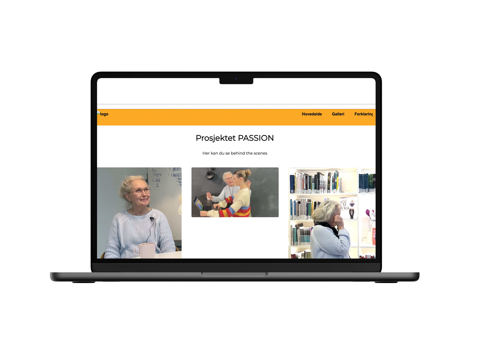

Denne oppgaven handlet om å lære seg å utføre intervjue på en riktig måte, samtidig som å lage en video av en person som ble intervjuet. Jeg startet med å lage spørsmål til intervjuet. Spørsmålene var ikke konfrontatoriske og la personen fortelle historien selv. Jeg brukte HVA/HVORDAN/HVORFOR metode som hjalp meg til å filme en god og grundig historiefortelling. Intervjuet startet med å forklare HVA passion er, HVORDAN fikk personen denne passion og hvorfor brenner hun for den passion. Jeg og min gruppe valgte skoletavle som bakgrunn. Grunnen til dette var fordi det er en clean bakgrunn, men også fordi det passet med personens passion. Filming tok utgangspunkt i 5 skuds reglen, som handler om closeup of the hands, closeup of the face, wide shot, over the shoulder, unusual og interview. Jeg valgte å bruke closeup of the face, wide shot, over the shoulder og interview, da de andre filmsnuttene hadde dårlig kvalitet. Jeg brukte mikrofon til å få en god lyd, og Adobe Premiere Pro til å redigere videoen.
PILOTSITE
TEMA: VIDEO
